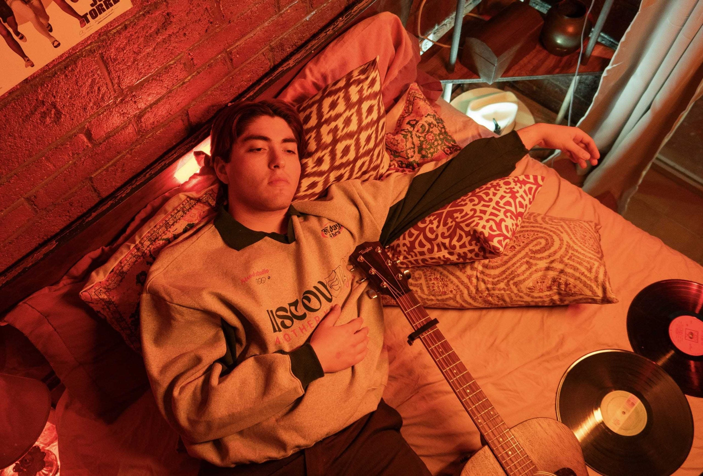
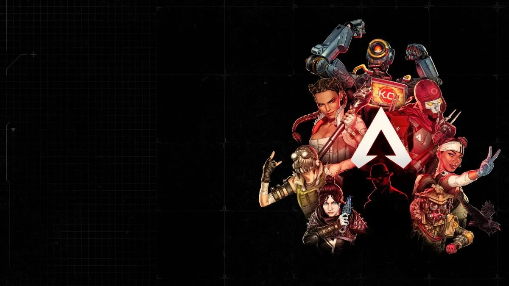
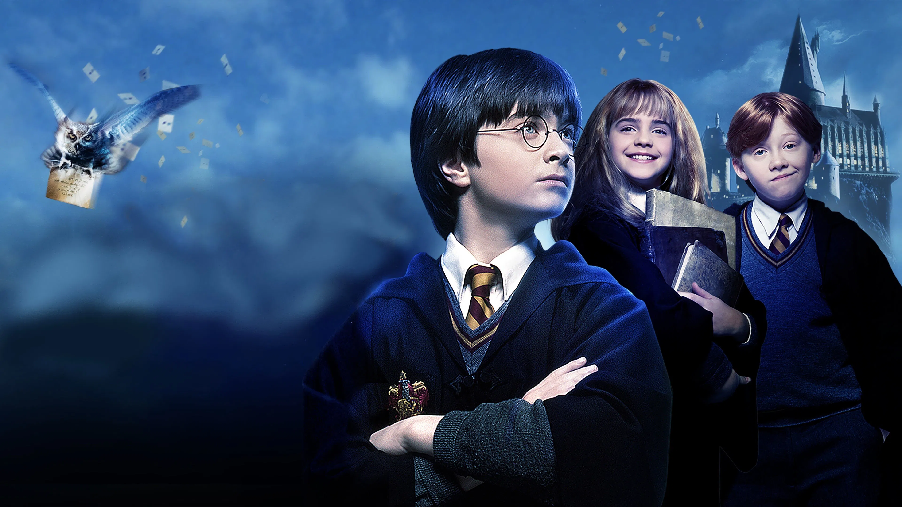

Las cosas que me acompañan
Publicado por Arturo | Categoría: Música, películas, juegos y otras distracciones
Música que escucho demasiado
La música está presente casi todo el tiempo: cuando programo, cuando voy en el transporte y hasta cuando se supone que debería estar durmiendo. Mis gustos cambian bastante, pero estas canciones siempre regresan a la lista.

- Kevin Kaarl: como me encanta, y está bien, que pasa si me voy?, Esta noche y Travis y Hunter.
- Nsqk: Hombre De Bien, Antagonista y ROY.
- Ed Maverick: lo que pienso y LA NUBE EN EL JARDÍN.
- También escucho: LATIN MAFIA, Fred again.., Childish Gambino, The Weeknd, Labrinth, Rojuu, YEYO y Fuerza Regida.
Una canción para acompañar la visita:
Juegos para perder el tiempo
Cuando ya terminé las tareas, o cuando estoy evitando empezarlas, normalmente termino jugando algo.

- Apex Legends: Para jugar en equipo y enojarme cuando pierdo por confiar en mis compañeros.
- Minecraft: Construir algo durante horas y después abandonarlo a la mitad.
- Roblox, Fortnite y Clash Royale: Partidas rápidas cuando no quiero pensar demasiado.
- Lo visual: Me gustan los colores pastel y los diseños con personajes como Snoopy, Domo-kun o My Melody.
Películas y series que sí recomiendo
No soy crítico de cine ni nada parecido, pero estas son historias que volvería a ver sin quejarme.

- Películas: Ratatouille, Harry Potter y el misterio del príncipe, Pacific Rim, A dos metros de ti y Yo antes de ti.
- Series: Mentes Criminales, El Buen Doctor, Los 100 e Invencible.